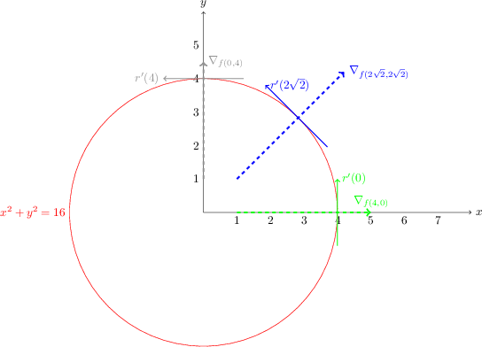

This blog post is aimed to explain proof of Lagrange Multipliers. I tried to express everything in a simple fashion,
nevertheless prospective reader needs to have some background on basics of calculus.
I’ll provide motivation to use Lagrange Multipliers with a simple problem. Throughout this post, I’ll use the following
problem statement to have expository propositions on some circumstances.
Here I have two functions which are f(x,y) = x \times y and g(x,y) = x^{2} + y^{2} = 16.
And I'm only interest in positive x and y values. As you might observe from the graph below f(x,y)
is defined in every place in first region -blue lines. Nevertheless, g(x,y) is only defined on
top of red line; circle.
My aim to use Lagrange Multipliers is finding x and y
values pair which satisfies x^{2} + y^{2} = 16 and provides highest x \times y.
In other words, I want to find a point on first region of circle -not inside but on- which provides highest x \times y.
For example, when x = 4 and y = 0, equation x^{2} + y^{2} = 16 is satisfied.
Nevertheless, this values provide x \times y = 0 \times 4 = 0, which does not seem highest f(x, y)
value on circle at glance
Figure 1: Graphical representation of example
Mathematical representation of explanation above takes only one line:
\textit{ max } f(x, y) \textit{ subject to } g(x,y)
Function g(x,y) is mostly called as a constraint function. Again, f(x,y) is defined in many places, but we
only interest the values that provides highest f(x,y) and satisfies constraint g(x,y).
First we parametrize our constraint function g(x, y)
x^{2} + y^{2} = 16
\rightarrow y = \sqrt{16 - x^{2}}
Then, let y = t, x = \sqrt{16 - t^2}
Here, we define x(t) = \sqrt{16 - t^2} = x and y(t) = t = y
Consequently, we define our vector-valued function r(t) = ( x(t), y(t) ) = (\sqrt{16-t^2}, t)
Figure 2: Graphical illustration of vector valued function r(t)
So, we can say that g(x(t),y(t)) = g(\sqrt{16 - t^2}, t) = g(x, y)
As you might notice, vector-valued function r(t) assigns a vector in 2D space with respect to variable t.
Also note that, since we interest the points in first region and circle, t \in [0,4]
Are you with me so far? :)
If so, here we'll use r(t) in order to bound f(x,y)
Lets define a modified version of f(x,y) which is F(t) = f(x(t),y(t)) = f(\sqrt{16 - t^2},t)
So, if we can find t_{0} which provides highest F(t) over t \in [0,4],
then we would effectively find x_{0},y_{0} pair that provides highest
f(x,y) and satisfies constraint function g(x,y) as well.
Before trying to do that, we make an investment of next steps by
playing around with r'(t) and some fundamentals about lines.
As explained before, r(t) produces vector, that lies on 2D space. Now, we consider derivative of it.
From now on, I'll use i and j notation -i denotes part of
vector that exist in x-axis and j denotes part of vector that exist in y-axis.
As \Delta t \to 0 distance in between location of r(t) and location of
r(t + \Delta t) decreases along the curve. Consequently, r'(t) becomes a tangent vector of curve.
Figure 3: As the difference in between t approaches zero,
r'(t) becomes the tangent vector
Now, let's investigate this tangent vector with usage of example.
g(x,y) = c = 16
Since we can parametrize g(x,y) in a form of g(x(t), y(t)) as we've done above:
So, here we show that, if we have a function, the gradient of it -which is \nabla_{g(x,y)} -
is perpendicular to it's tangent curve. Below, we graphically illustrate this statement for our constraint function as well.
Note that, any level curve satisfies this orthogonality property.

Figure 4: Gradient vector is perpendicular to tangent vector at any point (x,y)
on curve,
Now, we would find the equation of this tangent vectors. In order to do that, here we provide small proposition and proof;
if you are familiar, you might comfortably skip.
Small Theorem 1:
Let y_{1} = mx + c and y_{2} = nx + d. If this two lines are perpendicular, m \times n = -1
Small Proof 1: m = \tan{\theta} and n = \tan{\phi} In order to provide orthogonality, \phi - \theta = 90^{\circ}
So, slope of normal line at (2\sqrt{2}, 2\sqrt{2}) is equal to one. Since normal line is orthogonal to
tangent vector, slope of tangential vector has to be minus one, regarding to small proof.
So, we can express tangential line as following:
(y - y_{0}) = m(x - x_{0})
(y - 2\sqrt{2}) = -1(x - 2\sqrt{2}) \rightarrow x + y = 4\sqrt{2}
Now, we are close to provide proof of Lagrange Multipliers! :)
As declared a lot above, we need to find extreme point of F(t)
So, let me try:
Let's assume that, F(t) has it's maximum value at t = t_{0}
At the extreme point of f(x,y), inner product of gradient of
f(x,y) with tangent vector r'(t) is equal to zero, so they are orthogonal.
We also know that, gradient of constraint function g(x,y) is also orthogonal with r'(t)
for all x and y values.
So, here we observe that, at extreme point of f(x,y), normal line of it -which is \nabla_{f(x_{0},y_{0})}-
is parallel to normal line of g(x,y) -which is \nabla_{g(x,y)}.
With this observation, we can finally write the following equation which is worth all the explanations above: